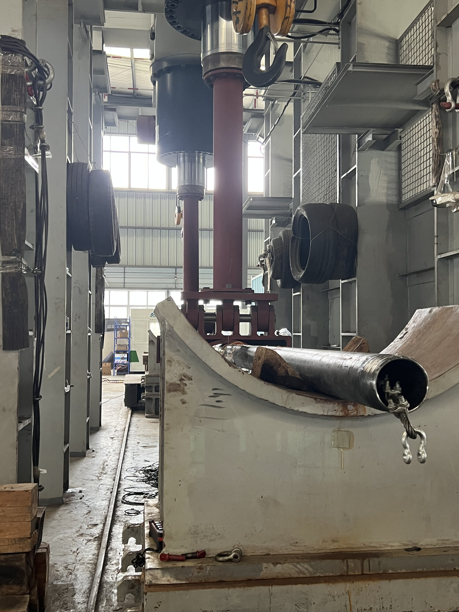
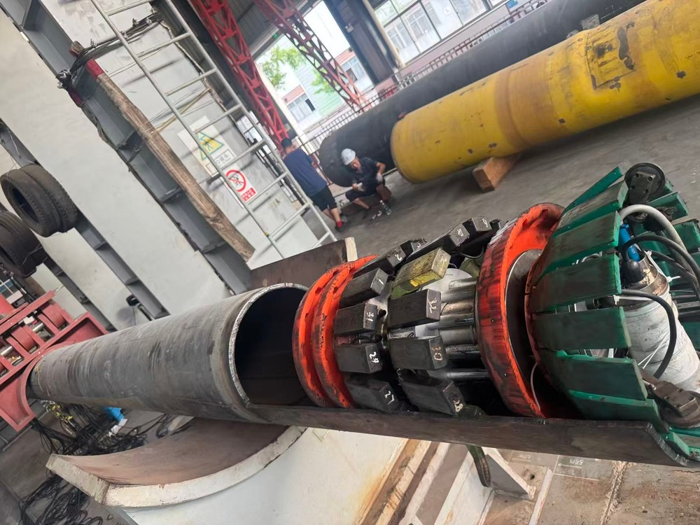

REAL PIPE PULL-TEST EVIDENCE
Pipe Stress Sensing Benchmark
Traceable magnetic, remanence, eddy-current and strain workflows—measured evidence kept separate from synthetic demos.
P110 casing3-axis magnetic + strain
406 mm pipeMEM + remanence + ETP + strain

P110 four-point bending

406 mm in-line inspection